Real2Sim2Real for Non-Prehensile Manipulation
Non-prehensile motion allows for the manipulation of objects too large to fit in a parallel-jaw gripper. We're broadly interested in coming up with a scalable method to learn these manipulation strategies, inspired by the prior works in Real2Sim and Sim2Real!
- Capture real objects and a human demonstration
- Build a digital copy of the cell and objects, plus contact targets from the tracked hand and object
- Train with reinforcement learning in simulation, guided by those contact targets
- Render successful runs from many views and lighting conditions
- Train a vision policy on the renders, then test it on the robot
Real2Sim
Parallel-jaw graps can tolerate small shape errors, but in non-prehensile manipulation (such as pushing or tipping), a small shape error changes where contact happens and how the object moves. With this method, I observed errors under 1 mm (< 1%) in key dimensions, which in combination with domain randomization of the mesh during PPO, helps policies transfer to real.
An agent does the reconstruction, inspired by Agentic Real2Sim and RoboSimStudio. The goal is for this pipeline to work robustly for arbitrary objects.
Mesh construction
The agent separates the object from its background, then writes code that fits a mesh to the depth and outlines across views. It uses the simplest shape the evidence supports and labels unseen surfaces.
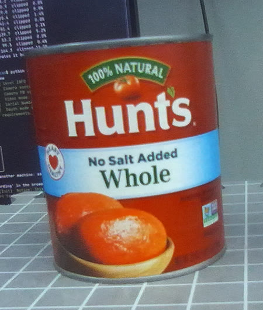
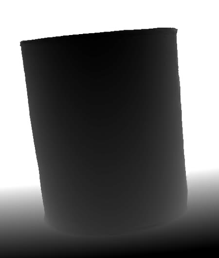
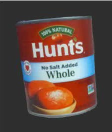
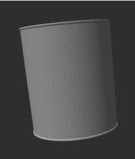
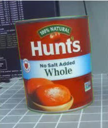
Appearance matching
This step is important for downstream VLA post-training. We project the training photos onto the mesh and renders it in Blender. The agent reviews the errors and can suggest a material or shape change, which is only kept if it holds up on the validation views.
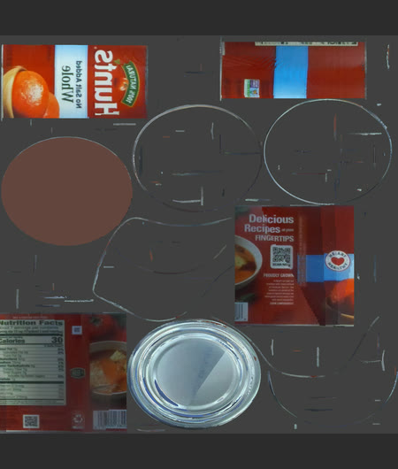
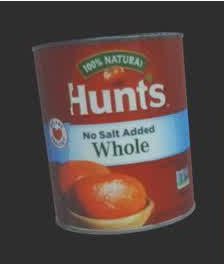
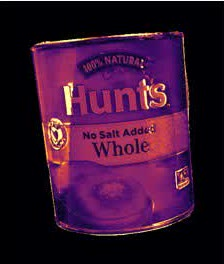
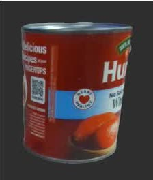
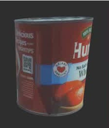
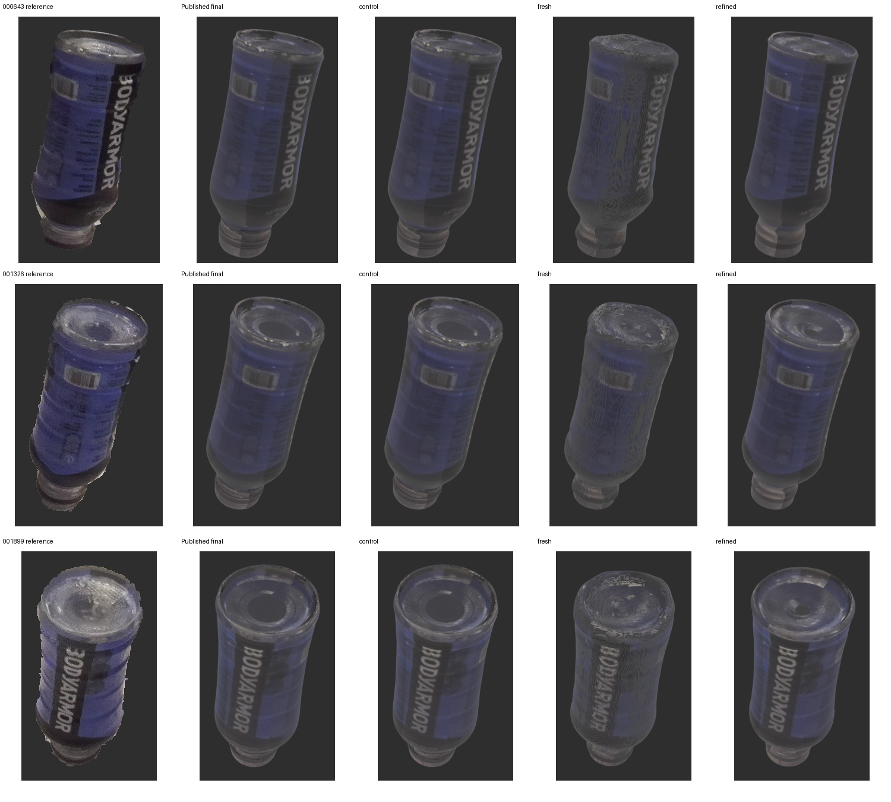
Object pose and contact point estimation
With the human demo, we track their hand with WiLoR and the cup with FoundationPose. Wherever the hand comes within 10 mm of the cup, we mark that spot on the cup's surface as a contact target, adapting the contact extraction from CHORD.
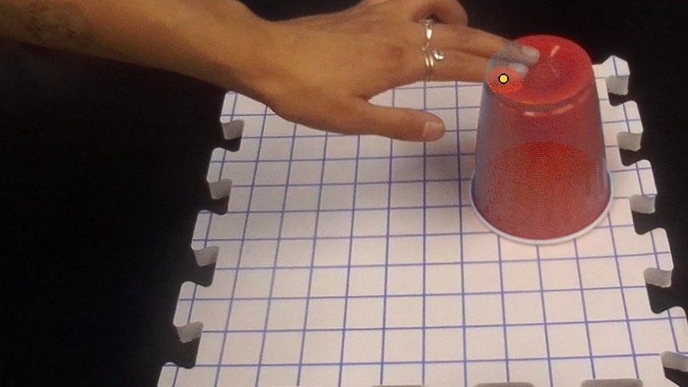
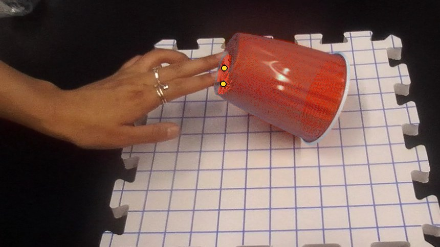
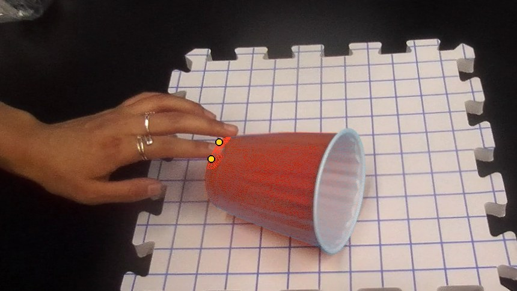
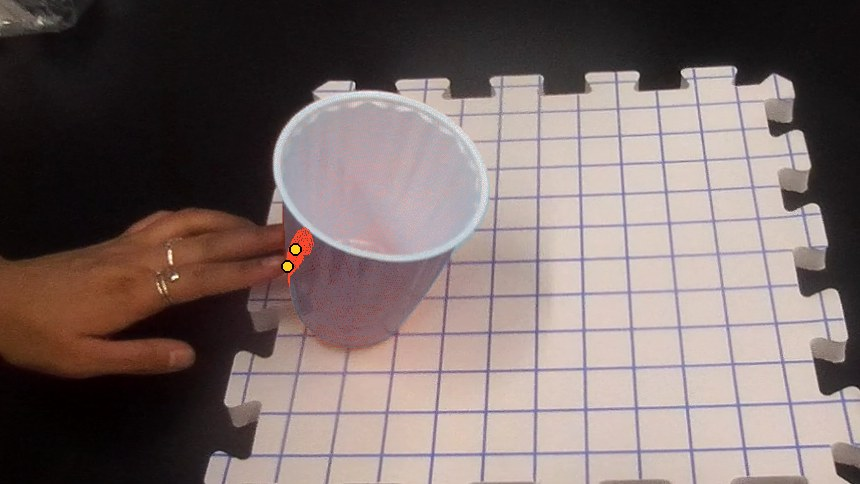
These targets feed into the reinforcement learning reward. The policy earns credit for reaching them and for turning the cup while it touches them. The largest reward is for leaving the cup upright, released and settled. Penalties cover too much force on the cup, forbidden collisions, and pressing into the table.
Task: flipping a solo cup
Splitting the task using the cup's pose
Two learned policies handle the flip. Once the cup is on its side and nearly still, a scripted step repositions the hands and the second policy takes over.
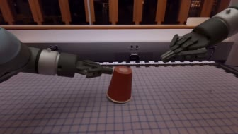
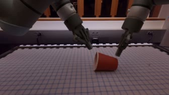
A soft, rotationally symmetric contact reward
We turn each demonstrated contact point into a ring. The reward fades smoothly with distance from that ring, guiding the policy without forcing an exact motion.
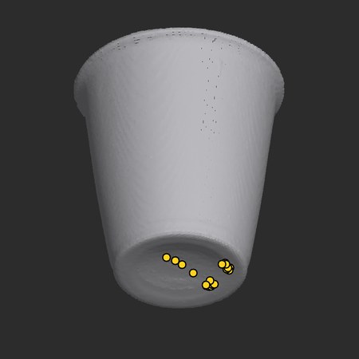
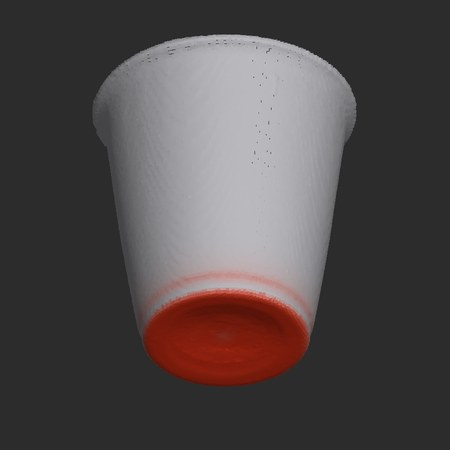
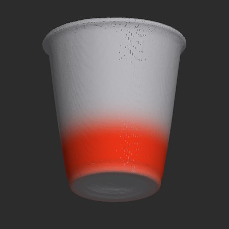
Brighter red means more reward for touching that spot.
Results
The full sequence completed 19 of 32 tries in simulation. Here are six tries picked at random, three that worked and three that didn't: